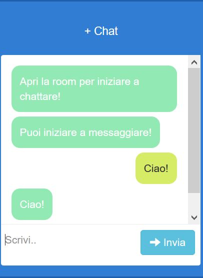
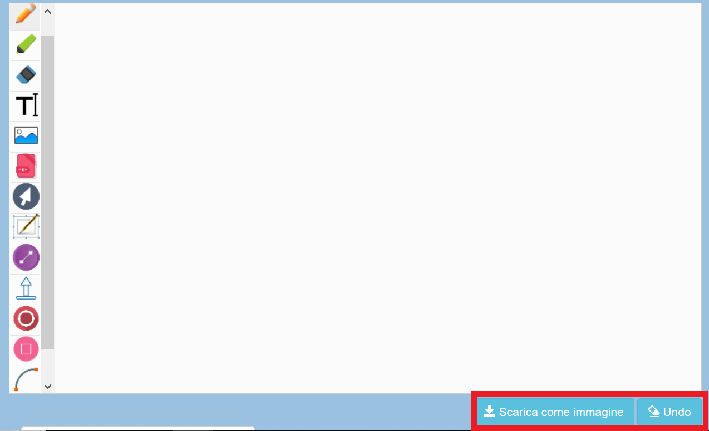
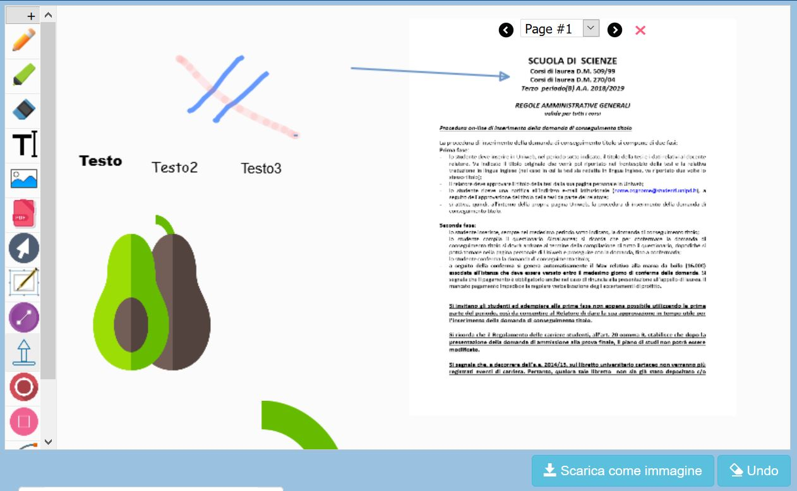
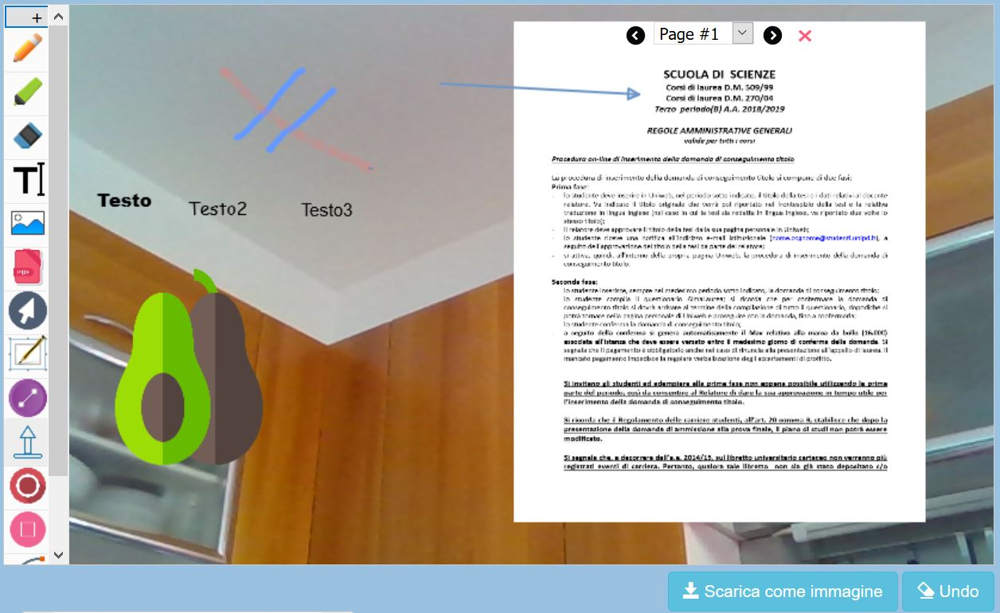

Registrazione
La prima cosa che devi fare per accedere all'applicazione è registrarti con un username univoco con il quale sarai riconosciuto all'interno del sistema. Con tale username gli utenti ti potranno videochiamare e contattare. Il form per l'inserimento dell'username appare attraverso un pop-up quando apri la pagina. Una volta inserito l'username scelto clicca su registrati (l'username deve essere unico all'interno del sistema, in caso contrario ti verrà segnalato un errore). Senza l'inserimento dell'username non potrai accedere alle funzionalità dell'applicazione.

La tua room
Una volta registrato nel sistema, per poter comunicare con gli altri utenti e dovrai aprire una room attraverso la quale sarà possibile scambiare dati. Una volta aperta la room per fare in modo che altri utenti si connettano con te basterà condividere il link della room agli stessi, attraverso il bottone che ti trovi sulla navbar laterale di sinistra. Quando gli altri utenti apriranno il link sarete connessi e potrete scambiare dati e usufruire di tutte le funzionalità dell'applicazione.


Videocall
La videocall permette di comunicare real-time con un altro utente via video. Per videochiamare un altro utente basterà inserire l'username dell'utente nel form che trovi nella seconda voce del manù di sinistra, nell'etichetta "Username destinatario". Una volta fatto ciò basterà premere "Chiama" . La tua richiesta sarà quindi inoltrata all'utente, al quale comparirà un form che chiede se accettare o meno la connessione. In caso accetti la videochiamata prenderà inizio, in caso contrario ti comparirà un messaggio di errore che ti indica la mancata connessione a causa del rifiuto del destinatario.


Quando vuoi terminare la videochiamata sarà sufficiente premere sul bottone Stop per fermare lo stream video. Qualisiasi tra i due utenti può fermare la videochiamata. Da notare che quando non è attiva una videochiamata il tasto è disabilitato.

Tutte le videochiamate effettuate con l'app sono automaticamente registrate all'interno della sesisone instaurata nella room. Questo significa che è possibile in qualisiasi momento visualizzare e riprodurre una chiamata precedentemente effettuata all'interno della room per rivedrela. Per fare ciò basta inserire l'username dell' utente con il quale è stata effettuata la videochiamata e premere su Rec (pulsante giallo di fianco a Stop). L'inserimento dell'username avviene nello stesso form usato per l'inoltro della chiamata. Da notare che quando un utente non ha ancora effettuato una videochiamata il tasto è disabilitato, dal momento che non esistono videochiamata di cui fare il replay. Una volta che l'utente esegue la sua prima videocall il bottone viene abilitato.

Chat
La chat è una funzionalità che ti permette di comunicare real-time via messaggi con il tuo interlocutore. Come le altre funnzionalità, la chat si sblocca solo quando si viene correttamente registrati e si apre una room. Per mandare un messaggio al tuo interlocutore basterà inserire il test nel form di inserimento e premere su invia.
Canvas
La canvas è una funzionalitgà che permette la comunicazione real-time attraverso una lavagna che visualizza in contemporanea i tuoi disegni e quelli del tuo interlocutore. Come le altre funzionalità viene sbloccata solo seguito della registrazione e dell'apertura della room. La canvas possiede i seguenti strumenti:
- Strumenti di disegno, quali: matita, pennarello;
- Strumenti per la visualizzazione di file: in formato pdf e png, che sono ridimensionabili. Nel caso dei pdf è possibile sfogliare le pagine;
- Drag and drop per spostare l'area di disegno;
- Strumenti di disegno di forme geometriche, quali: linee, frecce, cerchi, quadrati e archi;
- Strumento per l'inserimento di testo;
Inoltre in basso a destra si trovano dei comandi extra che ti consentono, rispettivamente, di esportare quello che disegni come immagine (nei formati png, jpg, gif, webp) e di esguire l'undo delle operazioni di disegno (dell'ultima figura o di tutte le figure per pulire completamente la lavagna).
La canvas funziona in due modalità differenti. Quando non è attiva una videochiamata lo sfondo su cui si va a disegnare è bianco, quando invece è attiva lo sfondo è la videochiamata stessa. In questo modo l'utente è in grado di inserire elementi di realtà aumentata all'interno dello stream video, in modo da arricchire l'esperienza di assistenza, fornendo uno strumento più semplice e intuitivo per fornire comandi, condividere documenti etc.
 